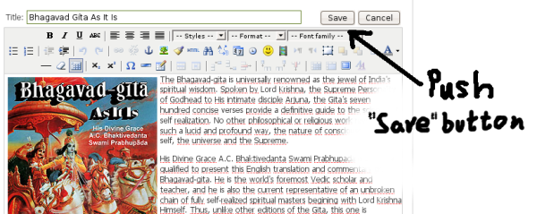
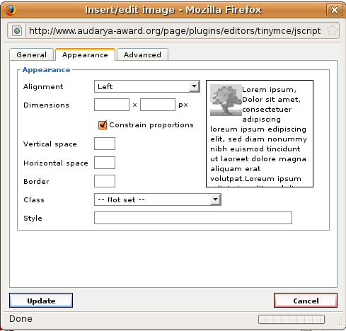

Thank you for being part of Audarya-Award.org. This site is designed to glorify the contributions of devotees in all Vaisnava missions around the world.
If you are a registered user of Audarya-Award.org, you can then propose (upload) the listing of new items, articles, books or anything that was made by a devotee. After your item has been reviewed by our site administrators your proposal will appear on the Audarya-Award site, and all visitors (including you) will be able to vote for this item. (Items can be modified after they have been uploaded and reviewed)
1. How to register on site?
1.1. Click here and fill out the registration form. 1.2. Audarya-Award will send you an automatically generated e-mail message within a few minutes. Please read it and follow the instructions to activate your account. 1.3. Go to Audarya-Award page and Log In with your new user name and password.
2. How to add new content?
2.1. Register yourself if you are not yet registered yet.
2.2. Go to Audarya-Award page and Log In with your you user name and password.
2.3. Click on “Add New” link in “Content” menu (left side down on HYPERLINK "http://www.audarya-award.org/page/"main page).
2.4. Fill up the appearing form:
a) Give a Title b) Write a short description about the item.
c) Upload an image, video, MP3, if you would like (see 1.3, 1.4 points). d) Scroll down to the “Publishing” parameters and choose the “Works” Section. e) Choose an appropriate Category (example: Music, Book.. etc.) f) Clear „Finish Publishing” date. g) Go back to the top of the article, and Push the “Save” button. 
2.5. After you propose a new item, Auradya-Award will send a notification to administrators about it, and after a few days it will be publicly listed on Audarya-Award page. This step is only needed to prevent uploading negative content. Later, you can always modify the item that you uploaded.
3. How to upload an image?
3.1. Move the text cursor to the position where you would like to insert the image. We propose to move the cursor to the first position, and in this way you will insert the image before the text. Of course later you can modify the the position and other parameters of the inserted image. 3.2. You can see a link called “Image” below the text editing area.
3.3. Click on that link and a new window will appear. In this you can see an upload area with a text filed, a “Browse” and “Start Upload” button: 3.4. Push “Browse” button, and select the picture you would like to upload. 3.5. Push “Start Upload” button, and wait while your picture is uploading. 3.6. Scroll up again, select your uploaded picture and push “Insert” button. 3.7.After the picture is inserted into your article, you can modify some parameters like alignment, picture size, margins, etc. To do this click on image, and push image properties button on toolbar:
3.8. A new window appears, where you can set the parameters: 
Click on “Appearance” tab, and setup the “Alignment” as you required. We also propose to set “Vertical space” and “Horizontal space” fields to 5. After you finish, push the Update button.
4. How to link MP3, or Video files?
Because of the limitations of our server we propose to upload multimedia files (like MP3, AVI, MPEG) to common media servers.
After you upload your audio file, you can put the location into the description text of your item as described below:
For example if you upload a file (...jaya-radha-madhava.mp3) to Internet Archive (www.archive.org), then you can link it in the following way:
Result:
5. How to you edit/modify your already uploaded content?
You can always edit your previously uploaded articles later. To do this:
5.1. LogIn to Audarya-Award site 5.2. Navigate to your article. 5.3. You can see a small icon after the item title. Push this icon-button. 5.4. Make you changes 5.5. Push “Save” button at the top of article.